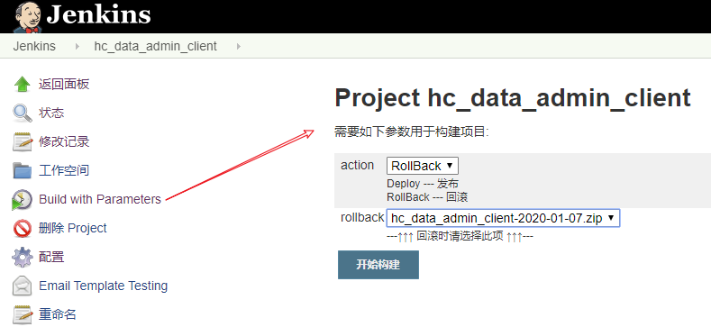
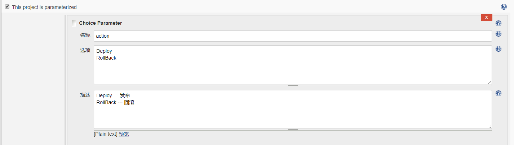
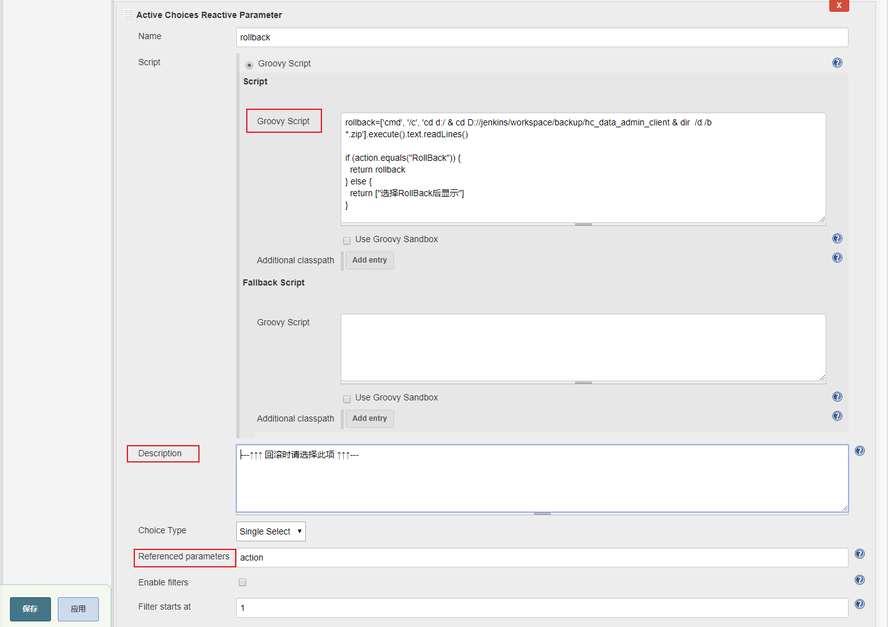
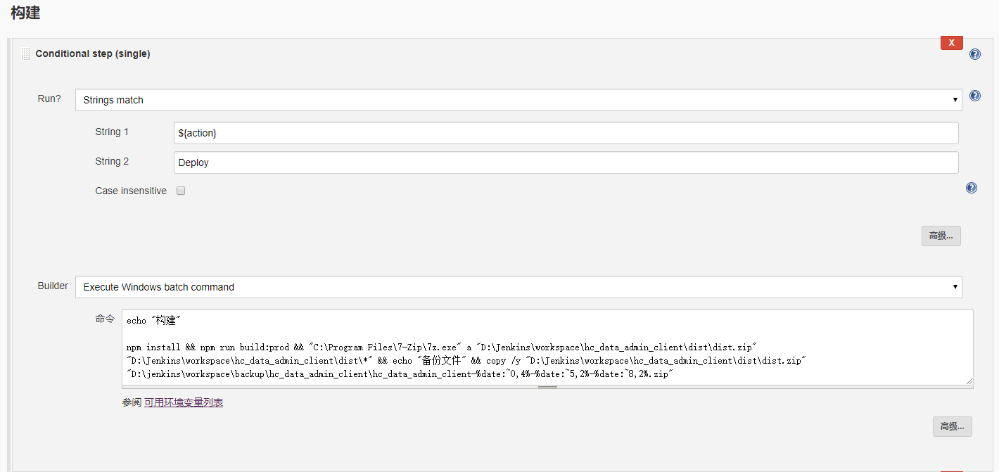
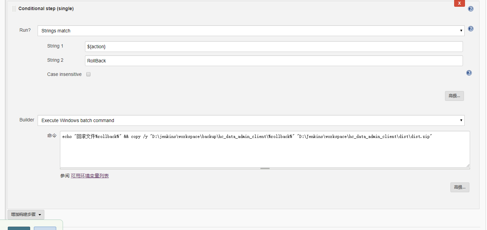
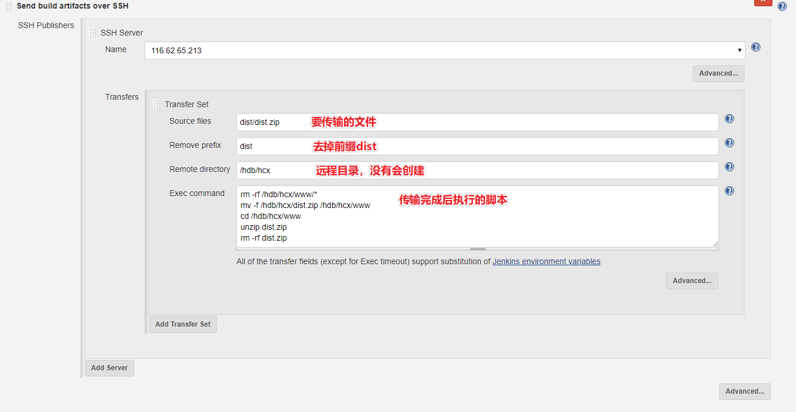

在系统版本迭代过程中，可能出现当前版本发布后存在一些问题，这种情况下就需要回滚上一个版本，利用jenkins可以实现项目的备份与回滚。
👇最终效果

1. 安装插件
安装插件，可以扩展参数化构建过程
GroovyActive choicesConditional BuildStep
2. 配置参数化构建过程
- 在Gogs Webhook中勾选
This project is parameterized - 添加
Choice Parameter，可选发布或是回滚 - 添加
Active Choices Reactive Parameter，选择回滚的版本


在windows环境下，列出备份文件夹中所有的历史版本1
2
3
4
5
6
7rollback=['cmd', '/c', 'cd d:/ & cd D://jenkins/workspace/backup/hc_data_admin_client & dir /d /b *.zip'].execute().text.readLines()
if (action.equals("RollBack")) {
return rollback
} else {
return ["选择RollBack后显示"]
}
3. 构建
- 选择Conditional step(single)进行构建
- 若是Deploy情况，则打包项目，并拷贝压缩包至备份文件夹
- 若是RollBack情况，则将备份文件拷贝至dist文件夹中（因为Send build artifacts over SSH中传送文件到远程服务器的功能中，本地文件只能选择Workspace中的文件，故将备份文件先拷贝至dist文件夹，等构建完成后，统一进行构建后操作）
- 若要用shell，可参考Use Shell Execute with Jenkins windows master/slave
👇构建
&&表示上一步完成才进行下一步操作1
2
3echo "构建"
npm install && npm run build:prod && "C:\Program Files\7-Zip\7z.exe" a "D:\Jenkins\workspace\hc_data_admin_client\dist\dist.zip" "D:\Jenkins\workspace\hc_data_admin_client\dist\*" && echo "备份文件" && copy /y "D:\Jenkins\workspace\hc_data_admin_client\dist\dist.zip" "D:\jenkins\workspace\backup\hc_data_admin_client\hc_data_admin_client-%date:~0,4%-%date:~5,2%-%date:~8,2%.zip"
👇回滚
1
echo "回滚文件%rollback%" && copy /y "D:\jenkins\workspace\backup\hc_data_admin_client\%rollback%" "D:\Jenkins\workspace\hc_data_admin_client\dist\dist.zip"
4. 构建后操作
用Publish over SSH将压缩包传到远程服务器

1 | rm -rf /hdb/hcx/www/* //删除目录下的所有文件和文件夹 |
之后的邮件通知等参考「windows环境jenkins+gogs自动部署Vue项目 #S03」
参考：
使用jenkins进行项目的自动构建部署
jenkins 备份和回滚（by：自己查资料学习）
Jenkins 备份回滚实现
jenkins+gitlab项目回滚